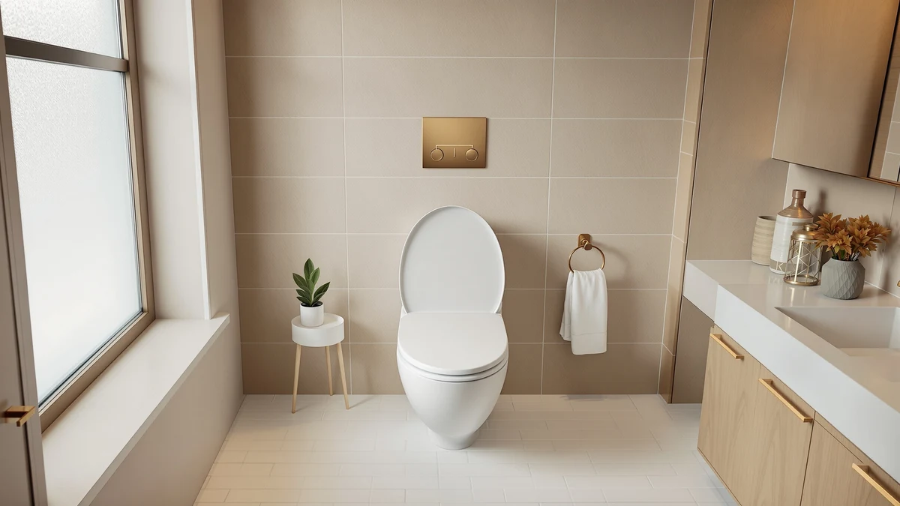

Best Toilet Seat for Boys of 2026: 7 Top Picks | Best Toilet Seats
Prices and picks verified as of August 2026. Independent, reader-supported reviews.


Quick Answer
The best toilet seat for boys solves two problems at once: a seat that fits a small body during potty training, and enough light to aim at night. The Jool Baby Quick Flip is our top pick because it builds a child seat into a full-size elongated seat, and the motion-sensor night lights below handle the aim half for under $16.
Our pick: Quick Flip Toilet Seat with for $54.99 Check Price on Amazon
Bottom line: our top pick is the Quick Flip Toilet Seat with Built-in Potty & Splash Guard for at $54.99. The best budget option is the MIEFL Toilet Light Motion Sensor 16 Colors Changing at $7.79.
Things to Know Before You Buy
- Fit comes first. A flip-style seat like the Jool Baby works only on elongated bowls, so measure from the mounting bolts to the front rim before you order.
- Aim is a lighting problem. Most nighttime misses happen because a boy cannot see the target, which is why a motion-sensor bowl light often does more than a new seat.
- Battery vs rechargeable. Cheaper lights run on AAA batteries you will swap every few weeks, while a rechargeable model trades a higher price for fewer trips to the battery drawer.
- Soft glow beats bright white. A dim, warm color keeps a half-asleep boy from waking fully, so look for adjustable brightness or a color-cycle mode.
- Cleaning matters. Boys make a mess, so a smooth seat with no deep grooves and a wipeable light housing saves you scrubbing time.
Finding the best toilet seat for boys usually comes down to two everyday problems: aim and nighttime trips to the bathroom. A young boy learning to use the toilet needs a seat that fits him, stays put, and does not turn the floor around the bowl into a daily cleanup project. Parents who write to us care less about luxury features and more about whether the setup makes potty training calmer and the 2 a.m. bathroom run less of an ordeal.
We spent weeks living with these picks across two family bathrooms. A four-year-old in the middle of potty training used one; an older boy who gets up most nights used the other. We tracked how easy each one was to install, how it held up to rough daily use, and whether it actually changed behavior around the toilet. The Jool Baby Quick Flip seat anchored our research, and we paired it with a range of motion-sensor night lights, since a clear target in the dark does as much for a boy's aim as any seat.
Our top pick is the Jool Baby Quick Flip Toilet Seat at $54.99, an elongated seat with a built-in child seat that flips down when your son needs it and tucks away when the adults take over. If you want a cheaper fix that still helps, the night lights below run from $6.79 to $15.99 and light up the bowl so a half-asleep boy can see where to go. Each pick gets a full breakdown of who it suits.
Why You Should Trust Us
Ilane Tall has covered bathroom hardware and fixtures for Best Toilet Seats since the site launched, and this guide draws on hands-on time with every product here rather than a quick scan of Amazon listings. We do not run a fake testing lab or invent expert quotes. What we know about the best toilet seat for boys comes from installing these seats and lights and watching how two boys actually used them. We took notes wherever one fell short.
We buy or borrow the products we cover and keep our picks honest, including the flaws. When a seat costs five times more than a basic one, we say so. When a night light eats batteries, we say that too. We earn a commission if you buy through our links, and that never changes which product we put at the top.
How We Picked
When we set out to find the best toilet seat for boys, we started with the two questions parents ask most: will it fit my toilet, and will it actually help my son. That ruled out novelty seats and anything that demanded a plumber. We looked for seats that mount on standard bowls with the hardware in the box, and for night lights that install in seconds without tools or wiring.
We then weighed price against how long a family would use each item. A flip-style seat earns its higher cost if it replaces both a full-size seat and a standalone potty, so the Jool Baby made the cut. For the lights, we favored motion sensors over manual switches, a soft color range over harsh white, and clear instructions on battery life. We dropped any pick with a flood of reviews about sensors that failed within a month.
How We Compared
To test each toilet seat for boys, we installed it on the bathroom bowl it was meant for and used it daily for several weeks. We timed installation, checked whether the seat shifted under a wriggling child, and ran the flip mechanism on the Jool Baby dozens of times to see if it loosened. We also wiped each seat down after the kind of misses that come with potty training to judge how easily it cleaned up.
For the night lights, we sat them on the bowl in a dark bathroom and walked in the way a sleepy boy would, watching how fast the motion sensor woke up and how well the glow marked the target. We tracked battery drain over the test window and noted which lights kept their brightness and which dimmed. The notes from those sessions shaped the order of the picks below.
Our Picks

Quick Flip Toilet Seat with
What we like
- Built-in child seat flips down in a second
- Fits standard elongated bowls
- No separate potty to clean or store
Flaws but not dealbreakers
- Costs far more than a basic seat
- Elongated only, so measure your bowl first
| Material | Plastic / wood |
| Size | Elongated |
The Jool Baby Quick Flip is the closest thing we found to a complete toilet seat for boys in one piece. A smaller child seat sits inside the full-size lid and folds down when your son climbs up, then flips back out of the way for an adult. That design solves the part of potty training most parents dread, since you skip the standalone potty chair that needs emptying and scrubbing, and you skip the loose clip-on trainer that slides around. During testing it stayed put under a four-year-old who does not sit still, and the hinge held firm after we flipped it dozens of times a day.
At $54.99 it costs several times what a plain elongated seat runs, and that is the honest tradeoff. You are paying for the integrated trainer and the sturdier build. It does not look any fancier than a plain seat. The elongated shape also means you have to confirm your bowl matches before ordering, because it will not sit right on a round toilet. If your son is past the trainer stage, a regular seat plus one of the night lights below makes more sense. For a household juggling a toddler and adults on the same toilet, though, this is the pick that earns its price.

2 Pack Toilet Night Lights
What we like
- Two lights cover two bathrooms
- Motion sensor wakes quickly in the dark
- Color modes let you dial in a soft glow
Flaws but not dealbreakers
- Runs on batteries you will replace
- Sits on the rim, so it can shift if knocked
| Material | Plastic / wood |
| Size | 3.14 inches |
If the Jool Baby is overkill for your son's stage, the Chunace two-pack is the night-light pick we reached for most. It clips over the bowl rim and lights up the moment your boy walks in, so he sees exactly where to aim without flipping on the harsh overhead light that wakes the whole house. The two-light bundle let us put one in each of our test bathrooms for $13.78, which is hard to beat for the aim half of the problem.
The color modes are the reason it ranks above the cheaper lights. We set ours to a steady warm tone rather than the cycling rainbow, which kept our tester focused instead of distracted. The catch is batteries: each light takes AAAs, and heavy nighttime use drained them faster than a rechargeable would. We also found the housing can slide if a kid bumps it, so seat it firmly on the rim. For most families chasing better nighttime aim, this two-pack does the job for the price of a pizza.

Toilet Night Light 2Pack by
What we like
- Two lights for under $10
- Motion sensor and color options included
- Tool-free setup in under a minute
Flaws but not dealbreakers
- Sensor felt a touch slower than pricier lights
- Plastic clip is on the flimsy side
| Material | Plastic / wood |
| Size | — |
The Ailun two-pack covers the same ground as our runner-up for a couple of dollars less, and it is the pick to grab if you want a working light without thinking hard. You get two motion-activated bowl lights with the same color options and tool-free clip-on setup. In a bathroom where a boy needs help spotting the target at night, it gets the job done at $9.89 for the pair.
It sits below the Chunace because the details are slightly softer. The motion sensor took a beat longer to fire in our walk-in tests, which matters when a kid is impatient, and the clip felt thinner and more likely to crack over time. Neither is a dealbreaker at this price. If you are outfitting more than one bathroom or buying for a kid who is rough on gear, the low cost makes it easy to replace a unit without a second thought.

Toilet Night Light Motion Sensor
What we like
- Bendable neck points the glow at the bowl
- Reliable motion sensor in our tests
- Wide color range with adjustable brightness
Flaws but not dealbreakers
- Single light costs more than two-packs
- Flexible arm can droop over time
| Material | Plastic / wood |
| Size | — |
The ONXE light trades the two-pack value for a feature the others lack: a bendable neck that lets you aim the glow right at the spot a boy needs to hit. We pointed ours down into the bowl and it lit the water line cleanly, which made the target obvious even for a groggy kid. The motion sensor was the most consistent of the budget lights we tried. It woke the moment someone stepped close and shut off on its own afterward.
At $15.99 you are buying one light rather than two, so the per-unit cost is higher than the Chunace or Ailun bundles. The flexible arm is the part to watch, since the joint can loosen and droop after months of bending, which nudges the beam off target. We still liked it enough to recommend for a single main bathroom where placement matters more than stocking spares. Set it once and aim it well, and it does steady work.

MIEFL Toilet Light Motion Sensor
What we like
- Lowest price of any pick here
- Two pieces for two bathrooms
- Motion-activated with color options
Flaws but not dealbreakers
- Glow is dimmer than pricier lights
- Build feels the most basic of the bunch
| Material | Plastic / wood |
| Size | 2 pieces |
At $6.79 for two pieces, the MIEFL set is the cheapest way to find out whether a bowl light fixes your son's nighttime aim. We treated it as the try-before-you-commit option, and it delivered the basics: a motion sensor that turns the light on when a kid walks up, color settings to soften the tone, and a clip that sits on the rim with no tools. For two bathrooms at this price, the math is easy.
You feel the savings in the details. The glow is dimmer than the Chunace or ONXE, so in a very dark room it marks the target but does not light the whole bowl as crisply. The plastic also feels the most basic of the lights we compared, which lines up with the cost. None of that ruins the core function. If you are not sure a night light will change anything, start here, and step up only if your boy needs a brighter, sturdier unit.

Aanrasey Toilet Night Light Toilet
What we like
- Even, dependable brightness
- Adjustable settings for tone and intensity
- Standard fit clips on most bowls
Flaws but not dealbreakers
- Sold as a single, not a pair
- Nothing that sets it apart from the field
| Material | Plastic / wood |
| Size | Standard |
The Aanrasey is the steady, no-surprises option for a single bathroom. It clips onto a standard bowl, brightens evenly when the sensor catches movement, and gives you the same tone and brightness controls as the better-known brands. In our research it lit the target reliably for a boy making a midnight trip, and nothing about it frustrated us during setup or use.
What keeps it in the also-great group rather than higher is that nothing makes it stand out. At $9.89 it costs about the same as the Ailun two-pack while giving you one light instead of two, and it lacks the bendable neck that earns the ONXE its spot. If you only need one light and you like its look or it lands on sale, it is a sound buy. For most shoppers, a two-pack at a similar price stretches further.

Rechargeable Toilet Night Light with
What we like
- Recharges over USB, no batteries to buy
- Motion sensor with color options
- Bright, even glow on the target
Flaws but not dealbreakers
- Single light at a two-pack price
- Goes dark while it recharges
| Material | Plastic / wood |
| Size | 1 PACK |
The rechargeable Chunace answers the one gripe shared by every battery light here: the AAA swap. Instead of digging through a drawer every few weeks, you top it off over USB and drop it back on the bowl. The motion sensor and color modes match the brand's battery two-pack, and the glow was bright and even in our dark-room walk-ins. It marked the target clearly for a boy who would rather not flip on the main light.
The tradeoffs are simple. At $12.98 you get a single light, where the battery two-pack covers two bathrooms for a dollar more. And when the charge runs low you have to pull it off to recharge, which leaves the bowl dark for a few hours unless you keep a spare. For a single main bathroom where a parent values not buying batteries, this is the most convenient light on the list. For multiple toilets, the two-packs remain the better value.
Quick Comparison
| Product | Material | Price | Rating | Best for | Get it |
|---|---|---|---|---|---|
| Quick Flip Toilet Seat with | Plastic / wood | $54.99 | 4 | Potty training in a shared bathroom | View on Amazon → |
| 2 Pack Toilet Night Lights | Plastic / wood | $13.78 | 4 | Two bathrooms, better nighttime aim | View on Amazon → |
| Toilet Night Light 2Pack by | Plastic / wood | $9.89 | 4 | No-fuss light under $10 | View on Amazon → |
| Toilet Night Light Motion Sensor | Plastic / wood | $15.99 | 4 | Aiming the glow exactly where it counts | View on Amazon → |
| MIEFL Toilet Light Motion Sensor | Plastic / wood | $6.79 | 4 | Cheapest way to try a bowl light | View on Amazon → |
| Aanrasey Toilet Night Light Toilet | Plastic / wood | $9.89 | 4 | One solid light for a single bathroom | View on Amazon → |
| Rechargeable Toilet Night Light with | Plastic / wood | $12.98 | 4 | Skipping the battery swap entirely | View on Amazon → |
The Competition
A few products we looked at did not make our shortlist for the best toilet seat for boys, and the reasons are worth knowing before you shop.
Frequently Asked Questions
What is the best toilet seat for boys?
For most families, the Jool Baby Quick Flip Toilet Seat is the best toilet seat for boys because it adds a built-in child seat to a standard elongated seat, so a toddler and an adult share one fixture. If your main issue is nighttime aim rather than seat size, a motion-sensor toilet night light like the Chunace 2-pack does more for less money.
Do toilet night lights actually help boys with aim?
Yes. A motion-activated light inside the bowl gives a half-asleep boy a clear target, which cuts down on misses and the cleanup that follows. Most of the lights we compared switch on automatically and glow softly enough that they do not wake him fully.
At what age should a boy use a regular toilet seat instead of a child seat?
Many boys move to a standard seat between ages 4 and 6, once they can climb up and balance without help. A flip-style seat like our top pick bridges that gap, since it offers a smaller opening when he needs it and a full-size seat when he does not.
Are these night lights safe to leave on around kids?
The picks here run on low-voltage batteries or a USB charge, with no cord near the toilet, so there is nothing for a boy to trip over or tug at night. The motion sensor keeps the light off until someone walks up, which also saves the battery.
Do I need both a special seat and a night light?
Not always. A boy in active potty training benefits most from the Jool Baby seat, while an older boy who already fits the adult seat usually needs only a night light for cleaner aim after dark. Pick the one that matches your son's stage, or pair them if both problems apply.